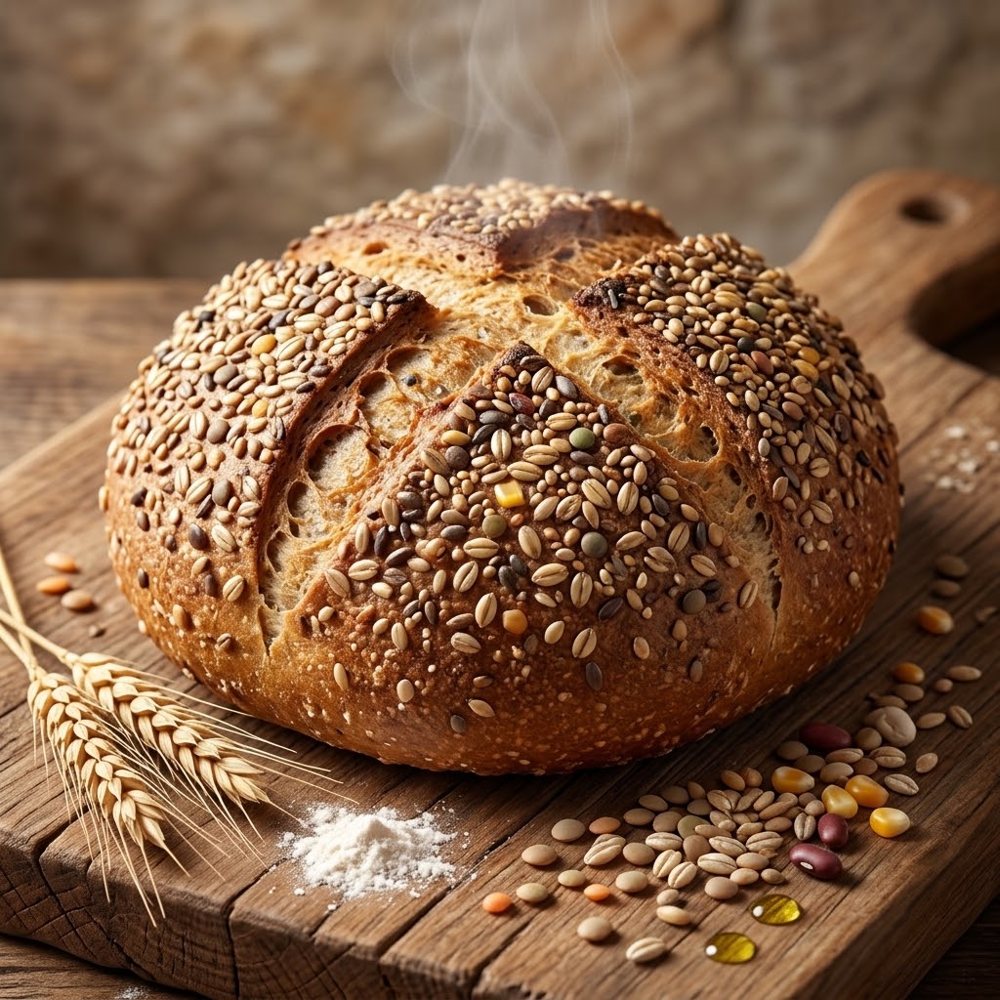
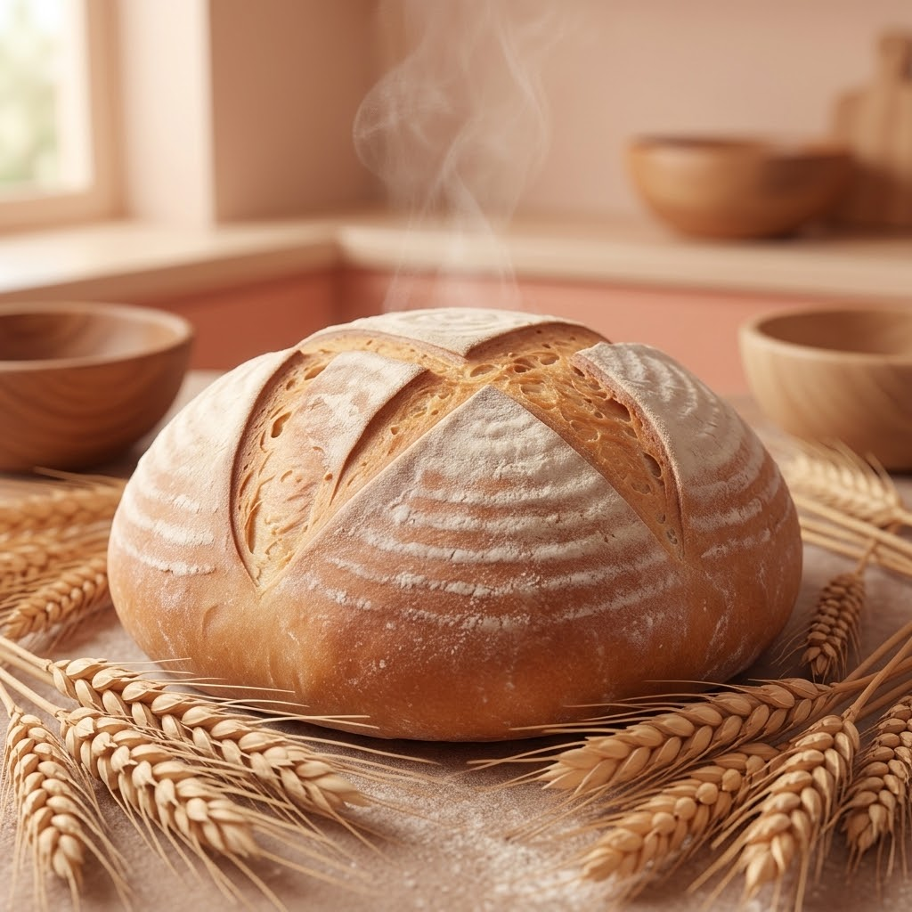
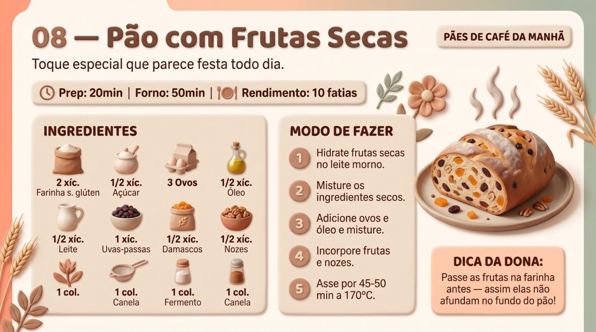
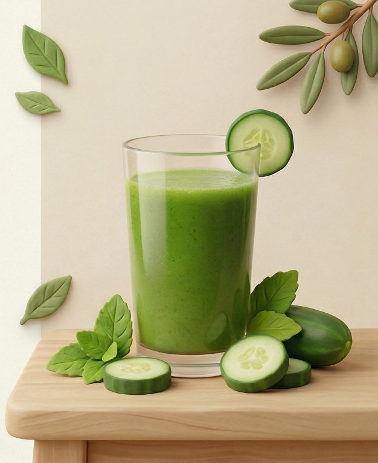
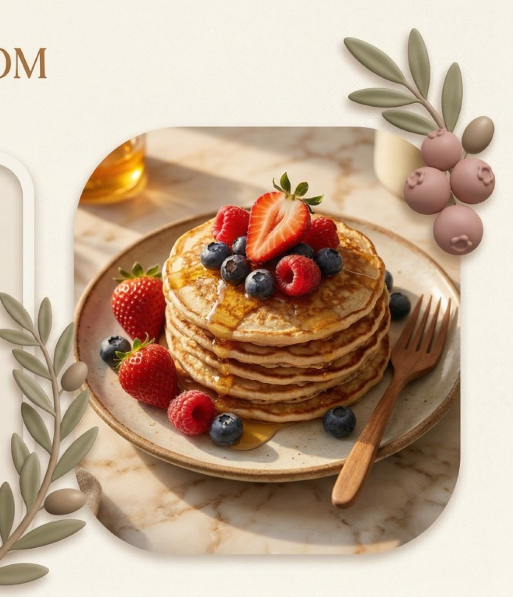

🎥 Aulas Práticas em Vídeo
Vídeo Aulas • Pães Rústicos
Domine a panificação artesanal na prática: do fermento à casca crocante na pedra e panela de ferro.
9 vídeo aulas passo a passo
Domine a panificação artesanal na prática: do fermento à casca crocante na pedra e panela de ferro.
9 vídeo aulas passo a passo



Arraste a barra horizontal (até 4 horas) ou toque nos atalhos rápidos.